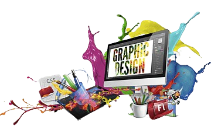
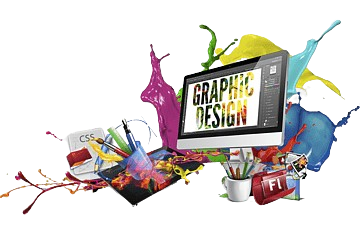

Arte é geralmente voltada para a expressão pessoal e a exploração de ideias, sentimentos e conceitos.
Pode assumir muitas formas, como pintura, escultura, fotografia e performance.
Design, por outro lado, é mais orientado para a solução de problemas e a funcionalidade.
Envolve a criação de produtos, sistemas e soluções que atendam a necessidades práticas e estéticas.
As áreas de design incluem design gráfico, design de produto, design de interiores e design de moda, entre outros.
 

Educação é o processo de aquisição de conhecimento, habilidades e valores, que ocorre em diversos contextos, como escolas, universidades e famílias.
Cultura refere-se ao conjunto de valores, práticas, tradições, arte, linguagem e modos de vida que caracterizam um grupo social ou sociedade.

Ambiente é tudo aquilo que nos cerca, incluindo os seres vivos, o ar, a água, o solo e as interações entre eles. É um sistema complexo e interdependente, essencial para a vida na Terra.
Estilo de vida é a forma como vivemos, incluindo nossos hábitos, valores, escolhas e comportamentos. Ele é influenciado por fatores culturais, sociais, econômicos e individuais.

Ciência é a busca sistemática por conhecimento sobre o mundo natural e o universo. Através da observação, experimentação e análise.
Tecnologia é a aplicação prática do conhecimento científico para criar ferramentas, produtos e sistemas que solucionem problemas e melhorem a qualidade de vida.

Saúde é definida como "um estado de completo bem-estar físico, mental e social, e não apenas a ausência de doença ou enfermidades.
Bem-estar é um termo abrangente que se refere a um estado de completo bem-estar físico, mental e social. É muito mais do que apenas a ausência de doenças.

Economia é a ciência social que analisa a produção, a distribuição e o consumo de bens e serviços. Ela busca entender como as sociedades organizam suas atividades econômicas para satisfazer as necessidades humanas.
Finanças se concentram na gestão do dinheiro, dos ativos e dos passivos. Englobam desde a gestão financeira pessoal até a gestão financeira de empresas e governos.